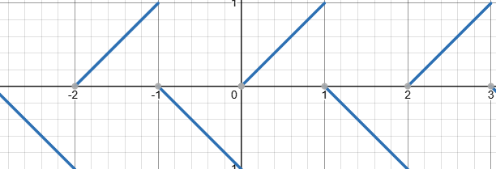

一种有趣的数学构筑法
一、引言
在看到某些分段函数时，其中所蕴含的一种“不够直接”的感觉往往令我感到难受。我们是否能找到一种方式，来用任意一个函数拟合各种特别的分段函数呢？
在必修一的课本上，存在这样一幅函数图像：

课本上对于该函数的表达式为：
$$ y=\left|x-2k\right|\left(2k-1然而，当我们尝试直接在desmos中使用这个公式时，我们会遇到这样的问题：

让我们来考虑一个问题：能否不用这种带括号指定范围的分段函数，来实现相同的效果呢？
先看结论！这个函数，写成这样子（可以复制到desmos里尝试）：
$$ y = \left(\left(-1\right)^{1+\lceil x \rceil} \cdot \text{mod}\left(x, 1\right)\right) + \left(\text{mod}\left(\lfloor x \rfloor, 2\right)\right) $$看上去相当的复杂，对吧？在介绍原理之前，我们可以再举一个例子：统计学的百分位数。
$$ P_k = \begin{cases} x_{\lfloor n \cdot k \rfloor + 1}, & \text{如果 } n \cdot k \text{ 不是整数} \\ \frac{x_{n \cdot k} + x_{n \cdot k + 1}}{2}, & \text{如果 } n \cdot k \text{ 是整数} \end{cases} $$这是它的常规公式。那么，我们能否找到一个独立的公式，效果却和百分位数一模一样呢？有的兄弟，有的！先看结论：
$$ t = \left( \frac{\lceil | n \times k\% - \lfloor n \times k\% \rfloor | \rceil + 1}{2} \right) \times X_{\lceil n \times k\% \rceil} + \left( \frac{|\lceil \text{mod}(n \times k\%, 1) \rceil - 1|}{2} \right) \times X_{\lceil n \times k\% \rceil + 1} $$看上去似乎更加复杂了…那么，我们要如何写出这样的函数呢？让我们先来拆分下上面两个函数的思路！
二、逻辑拆分
尽管以上两个公式令人生畏，但其中包含一个清晰的逻辑。让我们对其进行具体分析：
1.锯齿函数
观察原图像，我们可以分析一下其具备的规律：
- 在所有的偶数到奇数段内，曲线从
0 - 1上升。 - 在所有的奇数到偶数段内，曲线从
1 - 0下降。
规则很简单，我们要如何着手这个图像呢？既然我们不打算用括号显式的指定周期函数，那我们不妨用些现成的周期函数。观察mod(x,1)的图像，我们会发现，这和我们的目标很相似：

很显然，这个图像在所有的偶数到奇数段完全正确！因此，我们要做的就是把偶数段和奇数段分开处理。怎么做到呢？
这里我们不妨看看另一个函数：-1^n。我们都知道，-1的奇数次幂为-1，偶数次幂为1。刚好，我们需要做到的效果是偶数次幂时方向取反。将偶数到奇数区段内的数进行向上取整会使其变成奇数，反之亦然。在这么做之后多取一个**-1**就可以达到效果！（其实直接向下取整也可以）
那么，我们就得到了第二个关键组件：
$$ \left(-1\right)^{1+\lceil x \rceil} $$
所得图像如下。
接下来我们要将所有的偶数（奇数到偶数）区段+1。简单用一个取模函数加上向下取整即可：
$$ \left(\text{mod}\left(\lfloor x \rfloor, 2\right)\right) $$那么，只要将这三个模块组合，就可以达到完整的函数效果。接下来，让我们分析一下第二个函数：
2.百分位数
让我们先观察一下百分位数的逻辑：
$$ P_k = \begin{cases} x_{\lfloor n \cdot k \rfloor + 1}, & \text{如果 } n \cdot k \text{ 不是整数} \\ \frac{x_{n \cdot k} + x_{n \cdot k + 1}}{2}, & \text{如果 } n \cdot k \text{ 是整数} \end{cases} $$为了让式子尽可能的简单，我们来看看存在哪些点可以简化：
- 首先，当
n*k不是整数的时候，对其进行向下取整再加一完全可以等价于向上取整； - 如果n*k是整数，n*k的向上取整值不变
- 那么，我们可以把逻辑简化为：一定会取一半的当前位数（指n*k向上取整位置）；如果是整数，就取一半下一位数的值；如果不是，则再取一半当前位数
再完成这样的分析后，再来写式子就简单多了。
首先，我们肯定需要一个基底的一半当前位数：
$$ t = \frac{1}{2} \times X_{\lceil n \times k\% \rceil} $$接下来，我们需要得到一个式子用来判断是否具备小数。有两个简单的式子可以达到这个目的：
$$ \lceil x-\lfloor x \rfloor\rceil \\ \lceil mod(x,1) \rceil $$
这两个式子具备相同的效果，具体情况是：在有小数时输出1，否则输出0。
我们只要用这个式子的结果乘以一半的当前位数的值，再拿式子的结果相反值乘以一半的下一位数的值，就可以达成目的了。那么，我们还需要一个取反的式子：
$$ -(x-1) \\ |x-1| $$这两个式子都可以达成完全相同的效果。那么，我们只要把数个模块组装起来，就可以得到最终式子：
$$ t = \left( \frac{\lceil | n \times k\% - \lfloor n \times k\% \rfloor | \rceil + 1}{2} \right) \times X_{\lceil n \times k\% \rceil} + \left( \frac{|\lceil \text{mod}(n \times k\%, 1) \rceil - 1|}{2} \right) \times X_{\lceil n \times k\% \rceil + 1} $$3.思考范式
通过以上两个例子，我们可以注意到，这种方式可以找到一个共通的步骤：
- 分析原式
- 找到规律
- 找出式子
- 组合
分析原式和找到规律的部分似乎没有什么好用的快速方案，然而，式子中却似乎有很多部分是共通的！那么，我们不妨对常用的式子进行一个提取？
三、公式逻辑门
为了更好的运用这些公式进行组装，我们不妨采取一个统一的接口数字。那么，我们不妨设为0和1。其中，1代表是，0代表否！同时，为了方便，我们可以再取1和-1作为第二套逻辑标准。
单位转化
那么，当务之急就是先定义出两套标准的转化。我们不妨让0和-1互相转化：
$$ 1,0 => 1,-1 : -(-1)^x \\ 1,0 <= 1,-1 :\frac{x+1}{2} $$这两串有趣的式子就可以在x值合适的情况下完成转换的工作！接下来，我们再定义出几个有趣的小工具。
符号提取
符号提取可以将一个大小任意的数字转化到标准信号的一种之中。我们可以很自然的想到这样的方式：
$$ \frac{x}{|x|} $$然而，这个式子不可兼容0 。那么，我们只能采取一个更加复杂的方案：
$$ \lceil( \frac{x}{ (|x|+1)} )\rceil - \lceil(\frac {-x}{(|x|+1)} )\rceil $$不过，在确认输入值 ≠0 的情况下，可以采用第一种方案。
提取小数
提取小数可以用这两个简单的公式。同时，如果想表达是否“存在小数”，则进行向上取整即可：
$$ x-\lfloor x \rfloor \\ mod(x,1) $$非运算
1和-1的非运算再简单不过。我们考虑1和0的非运算：(两式效果相同)
$$ |x-1| \\ -(x-1) $$与运算
我们同样有多种方法可以实现该效果：
$$ \lfloor\frac{x_1+x_2}{2}\rfloor \\ x1\times x2 $$或运算
我们可以按照逻辑门的角度考虑：非（（非1）与（非2））即或。或者，我们可以用向上取整：
$$ \lceil\frac{x_1+x_2}{2}\rceil $$其实，拥有了以上三种门之后我们可以构筑出更多东西。在此并不一一列举，不过我们可以尝试构筑一下异或：
异或运算
我们采用这个逻辑：（1 与 非2）或 （非1 与 2）：
$$ \lceil\frac{[(x1\times-(x2-1))+(x2\times-(x1-1))]}{2}\rceil $$奇偶切割
我们可以通过以下两种方式将奇数部分和偶数部分切割。其中，前一种方案采取的是1/-1编码，后一种采取的是0,1编码：
周期性取值
用于在满足周期n时取到值k:（可以做成周期性添值或者乘值）
$$ k|[mod(\lceil x \rceil,n)]-1| $$判断大小
判断x是否大于（或小于）某个数k，可以直接将x与k相减，再通过提取符号观察正负即可：
$$ \frac{(x-k)}{|(x-k)|}(x≠0) \\\\ \lceil( \frac{(x-k)}{ (|(x-k)|+1)} )\rceil - \lceil(\frac {-(x-k)}{(|(x-k)|+1)} )\rceil $$如果想要判断是否在一定范围内，判断两次然后用与运算即可。
选择器
选择器只要根据条件在两种值中选择一种即可，实现上也非常简单（条件为k，两种情况分别为x1 x2）：
$$ k(x_1)-(k-1)(x_2) $$多重与&多重或
多重与和多重或只需要用连乘和连加即可：
$$ \prod_{i=1}^{n} x_i \\ \lceil\frac{1}{n}\sum_{i=1}^{n} x_i\rceil $$判断数值
要判断x是否等于某个特定的值（k），我们只需要将x-k带进符号判断公式中，并将-1设为1再取反即可：
$$ (|\lceil( \frac{x-k}{ (|x-k|+1)} )\rceil - \lceil(\frac {-(x-k)}{(|x-k|+1)} )\rceil|-1) $$区间二分
让x在每个区间k内，将前半段和后半段进行区分（返回值0,1）：
$$ \lfloor\frac {mod(x,k)}{k}+\frac{1}{2}\rfloor $$四、实战
我们现在可以来快速尝试将上述的内容运用到实战：
尝试1：ReLU（线性整流函数）
RuLU函数的基础函数是：
$$ \max(0,x) $$我们能否使用上述的内容来完成Relu呢？我们只需要用一个判断函数，在x的前面加上系数：x>0的判断，并将-1转化成0即可（为了实现这个目的，加一再除以2再向下取整）。式子如下：
$$ x(\lfloor\frac{\lceil( \frac{(x-k)}{ (|(x-k)|+1)} )\rceil - \lceil(\frac {-(x-k)}{(|(x-k)|+1)} )\rceil+1\lfloor}{2}) $$不过，这种方案是直接套模块得到的，我们还有更简单的方案，不过要具体分析情况得到了：
$$ \frac{(x + |x|)}{2} $$尝试2：自定义函数
场景设定
假设电费按用量分段计费：
- 第一阶梯（0~100度）：每度0.5元
- 第二阶梯（100~200度）：超出100度的部分每度0.8元
- 第三阶梯（>200度）：超出200度的部分每度1.2元
分步构造
1. 阶梯区间检测
我们需要三个逻辑信号（1表示属于该区间，0表示不属于）：
- k₁（第一阶梯）：x ∈ [0,100]
- k₂（第二阶梯）：x ∈ (100,200]
- k₃（第三阶梯）：x > 200
构造方法：
-
用符号差+取整检测边界：
- $$ k_1 = \lceil \frac{100 - x + |100 - x|}{2(100 - x + |100 - x|) + 1} \rceil - \lceil \frac{x - 100 + |x - 100|}{2(x - 100 + |x - 100|) + 1} \rceil + 1 $$
- $$ k_2 = \text{类似方法检测 } (100,200] $$
- $$ k_3 = \lceil \frac{x - 200}{x - 200 + |x - 200| + 1} \rceil $$
2. 阶梯费用计算
- $$ 第一阶梯费用：0.5x \cdot k_1\\ 第二阶梯费用：[50 + 0.8(x-100)] \cdot k_2\\ 第三阶梯费用：[130 + 1.2(x-200)] \cdot k_3\\ $$
3. 组合输出
总费用 = 第一阶梯费用 + 第二阶梯费用 + 第三阶梯费用 通过逻辑门确保只有当前阶梯信号为1时生效：
$$ \begin{aligned} \text{Cost}(x) = \ & \frac{x}{2} \left( \left\lfloor \frac{A_1}{2A_1+1} \right\rfloor - \left\lfloor \frac{B_1}{2B_1+1} \right\rfloor + 1 \right) \
- \ & \left( 50 + \frac{4(x-100)}{5} \right) \left( \left\lfloor \frac{A_2}{2A_2+1} \right\rfloor - \left\lfloor \frac{B_2}{2B_2+1} \right\rfloor - k_1 + 1 \right) \
- \ & \left( 130 + \frac{6(x-200)}{5} \right) \left\lceil \frac{x-200}{C+1} \right\rceil \end{aligned} $$
五、总结
这种方法看上去会将简单的函数大幅复杂化，最终得到一个尽管效果相同但式子复杂上许多，但成功消灭了括号和具体的“规则”的式子。同时，这种思维方式相当系统化和模块化，可以实现一种有趣的自由组装的效果，类似于程序一样。
希望这种方法能够具备一定的参考价值！